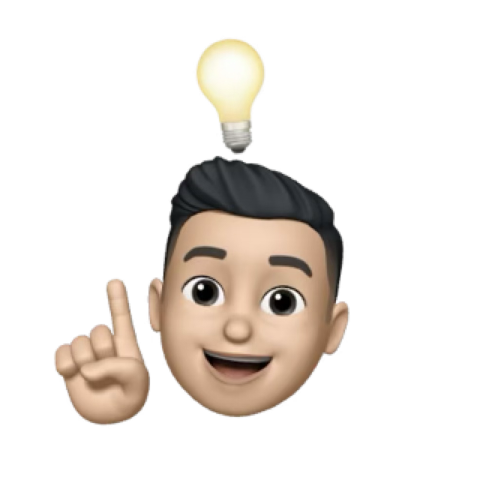

Experiments
Innovation, AR Design, Physical Experiences
Smart Plug Controller
2025
Vibe Coding


The Smart Plug Controller GUI is a Python-based, user-friendly graphical application designed using AI Vibe Coding to manage and automate smart plug devices effortlessly. Built using Tkinter for simplicity, this tool allows users to control their smart plugs manually or automatically based on system battery levels and application usage.
Blood Donation Experience Revamp
2022-2024
Service Design
Saved $16000 in the first year of pilot
run.
During my tenure as a UX Designer at St. Jude
Children’s
Research Hospital, I had the opportunity to delve deeper into the concept of blood donation
with the aim of cutting costs and saving children’s lives. As a hospital that does not
charge its patients and families, St. Jude relies heavily on the generosity of donors and
the effective utilization of donor dollars. Additionally, St. Jude operates its own blood
donation center, which often faces challenges in maintaining an adequate supply of blood,
much like other blood banks worldwide.
Experimental Patterns in PowerPoint
2023
Art
Set of 17 unique patterns, free to use personally or
commercially.
A while ago, I saw a circular pattern and wanted to use it
in
one of my slide decks I was working on at the time. However, there was one problem: I did
not have the source svg file. Though I got the svg file later, but it was quite difficult to
use it for my need. And the experiment began! I created a chain of circles in PowerPoint and
experimented with the border weight and styles to generate not just that one pattern, but
tens of completely new patterns. Use the button below to download editable 17 patterns in
PowerPoint.
Shades Arena: AR First-person Shooter
2019
concept Design
Imagine a world where realistic 3D models and animations can be loaded in real-time from cloud to an AR device which is just the shape of your sunglasses. Now add the ability to interact with real world using AR. This concept prototype tries to explore the same idea to make gaming even more lifelike. A first-person shooter which can be played as solo and multiplayer with in-person players and remote players as AI avatars. This could be a serious gamechanger for players and military training alike!
Your Heart Makes Art
2019
Product Design
What happens when you merge art, technology, and industrial design? That’s what I explored with my friends at DePaul University. The goal was to create a standalone art installation that uses technology to engage people in a public setting. This plotting machine was created using Arduino to control a couple of motors, connected to a pulse rate sensor. The readings are taken by custom software on a laptop and are converted to X-Y axis data, one of which is a circular piece of paper connected to the first motor and another one is a pen connected to another motor, plotting the readings on paper. This project was regarded as one of the most innovative projects in the university.
Chill Beats
2013-2019
Music
Around 2013, I learned about Music Maker Jam when I got my first smartphone. It was fairly easy-to-use and I got hooked to creating interesting beats. I was into Extreme Bass and Chill beats around that time this reflects in my music. While I was working on Shades: Combat Militia, I explored this tool further.
Nokia Themes Design for Nokia Store
2009-2012
UI Design
At the time when everyone owned Nokia S40 phones, the company released a tool to create custom themes and icon packs for Nokia S40 & S60 phones. This was the time when I learned Adobe Photoshop and Nokia Theme Creator, and published quite a few themes on Nokia/Ovi Store. I also managed my Nokia Themes blog on Google Blogpost and Wordpress. My themes got quite a popularity for their clean and clear aesthetic, and helped me earn enough money for my first Nike Sneakers!
Portable Playstation Phone Concept
2009
3D Modeling
2009 to 2017 was the time I was truly experimenting with my skills and learning all sorts of things. Around that time Google released a 3D modeling software called “Google Sketchup” which was easy to use and free, compared to the complicated and expensive ones. I loved sketching phone designs in my notebooks, and I used Sketchup to translate my sketches to 3D models. That’s when I envisioned a phone which has a slide-out panel with all the PlayStation remote buttons and this device can play PSP games. And 2 years later, Sony brought the PSP phone to the market.


{kind=link}
{kind=link}
{kind=link}
{kind=link}
{kind=link}
{kind=link}
{kind=link}
{kind=link}
{kind=link}
{kind=link}
{kind=link}
{kind=link}
{kind=link}
{kind=link}
{kind=link}
{kind=link}
{kind=link}
{kind=link}
{kind=link}
{kind=link}
{kind=link}